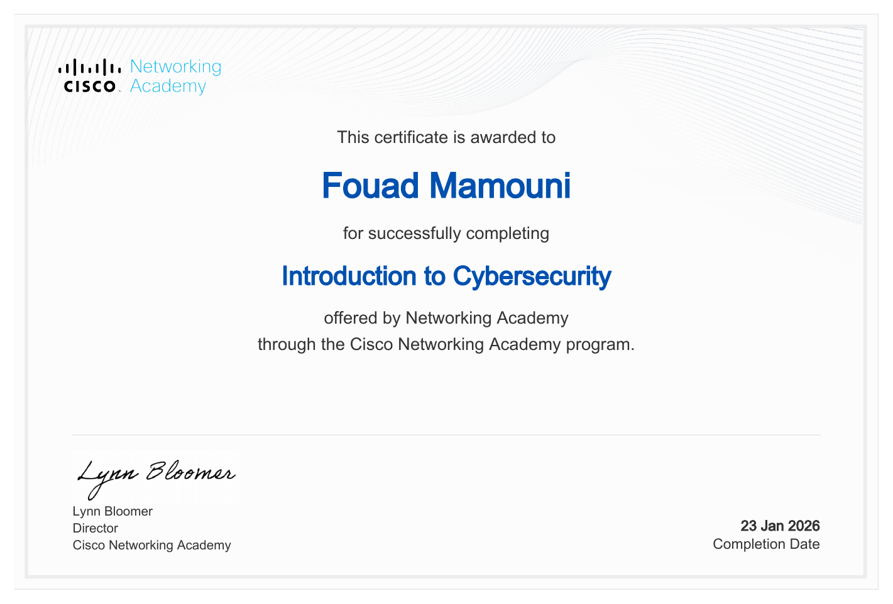
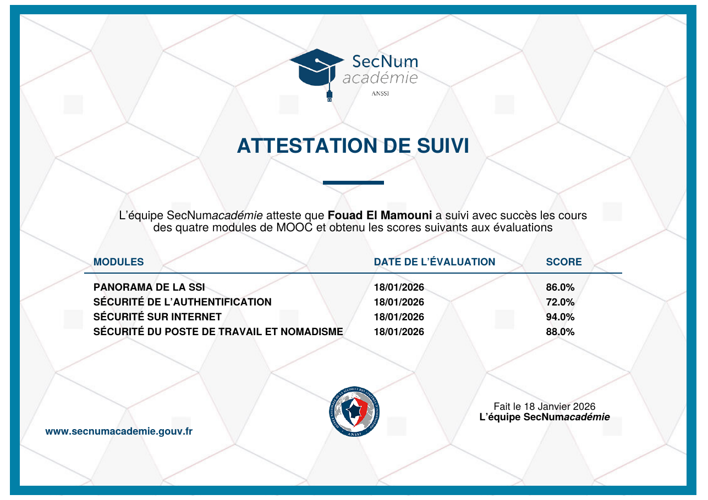

(ouvre le PDF dans un nouvel onglet)Introduction to Cybersecurity
Cisco Networking Academy
Vérifier le certificat Cisco (PDF, nouvel onglet)Portfolio — BTS SIO SISR
Fouad. Me contacterCisco · ANSSI
Formations en cybersécurité validées auprès de Cisco Networking Academy et de l'ANSSI. Chaque document est consultable en PDF.
Obtenues & consultables

(ouvre le PDF dans un nouvel onglet)Cisco Networking Academy
Vérifier le certificat Cisco (PDF, nouvel onglet)
(ouvre le PDF dans un nouvel onglet)ANSSI — attestation de suivi
Parcours